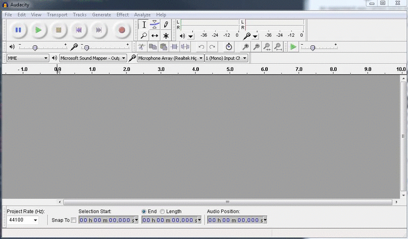
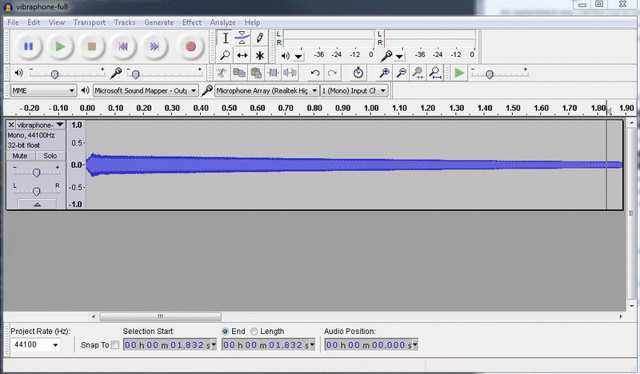
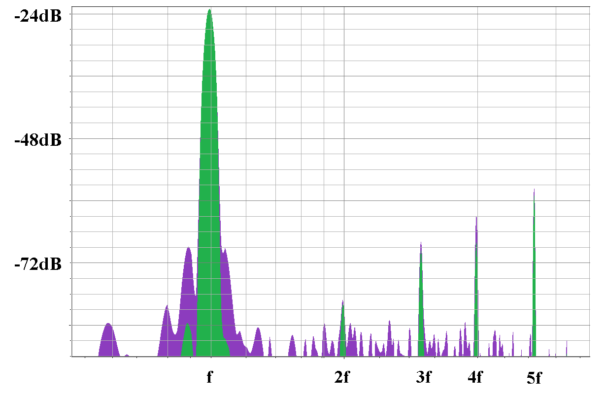

An experiment was carried out to better understand the difference between the sound created by the vibraphone mallet and the bar. The goal for this experiment is to determine if it is possible to isolate the resonant portion of a sound in order to compare it with our simulated sound. The following outlines the experiment background, procedure, and results.
The following is a recording of a vibraphone playing a B4:
The following is the same recording with the first 100ms trimmed off:
This experiment compares the harmonic spectrums of these tones. The initial loud impact of the bar brings out some of the brighter overtones during the first fraction of a second. Additionally, and perhaps more noticeably, the sound of the mallet or stick greatly influences the perceived timbre.
The following tools and inputs are required for this experiment:
The first step is to create a new sound file that is the original with the first fraction of a second clipped off.Open the sound file in Audacity:

Select the first 0.1 seconds of the track and hit the delete key:

Note: hold “CTRL” and scroll to zoom in or outUsing the two sound files, the harmonic spectrums can be derived using Audacity. The steps are as follows:
With some simple bitmap editing tools, the two plots can be easily compared. The following image shows a comparison of the two audio files. The purple represents the spectrum of the original sound. The green represents the spectrum of the trimmed sound:

From this graph, we can very easily see the harmonic series. The fundamental tone is visible around 500 hz. Overtones are visible around 1000 hz, 1500 hz, 2000 hz, and 2500 hz. These five overtones appear to be approximately harmonic. The trimmed sound clip will be a great approximation for the required isolated resonance that will be compared against the final simulated sound.
| Analyzed Freq. (hz) | Expected Freq. (hz) | Difference (hz) |
|---|---|---|
| 497 | 497 (f) | 0 |
| 993 | 994 (2f) | -1 |
| 1489 | 1491 (3f) | -2 |
| 1985 | 1988 (4f) | -3 |
| 2680 | 2485 (5f) | +195 |
| 2951 | 2982 (6f) | -31 |